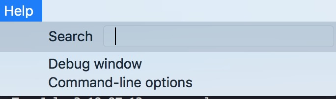

Qtum 如何添加运行选项（或配置文件）
Qtum钱包程序除默认设置外，还可以通过添加运行选项或配置文件实现特定的功能或运行模式。
PC 版钱包用户（Qtum Core qt钱包）
大多数用户最常用的钱包是 Qtum Core 钱包，即 Qtum 官方的 PC 版钱包。（还未下载钱包？可从https://qtumeco.io/wallet下载最新版钱包）
PC 版钱包用户可以通过配置文件修改钱包配置(该方法对命令行钱包同样适用）。方法如下：
1. 创建qtum.conf文件
在 Qtum datadir 路径下创建名为qtum.conf的文件，不同系统的默认的 datadir 路径稍有不同：
- Linux: ~/.qtum
- OSX: ~/Library/Application Support/Qtum
- Windows: %APPDATA%\Qtum (把这个路径复制粘贴到浏览器地址栏，会自动解析出路径所在，之后再打开这个路径即可)
请注意，除非你完全清楚自己在做什么，否则不要随意修改上述路径下的任何其他文件
（注：datadir 路径也可以设置，但默认为上述路径。如果你设置了 datadir 路径，请在你设置的路径下进行后面的步骤）
如果你不会创建文件，也没有关系，用户还可以通过 PC 钱包直接打开和创建 qtum.conf，在钱包菜单栏中点击 System Preference, 找到 OPEN CONFIGURATION FILE, 点击后即可自动弹出 qtum.conf 文件，具体如下图所示：

2. 写入所需配置信息
在上述创建的新文件qtum.conf中写入配置信息。
例如，如果需要配置rpc调用信息，可以在文件中写入：
rpcuser=test
rpcpassword=test1234
server=1
上述配置设置rpc调用的用户名为test，密码为test1234，并开启了server功能。
3. 重新启动钱包
重启钱包，配置文件即可生效。
其他选项
感兴趣的读者如果想了解其他所有可用的 Qtum 配置信息及其含义，可以通过钱包查看：
打开钱包菜单栏的Help->Command-line Options，即可查看所有可用配置选项。


命令行钱包qtumd
不使用命令行模式的用户请忽略本小节内容。
对于熟悉命令行模式的用户或开发者，除上述添加配置文件的方式外，还可以直接通过命令行选项实现配置。
例如：
./qtumd -rpcuser=test -rpcpassword=test1234 -server=1
该例子中的选项-rpcuser=test -rpcpassword=test1234 -server=1实现了与上面提到的配置文件相同的配置。
需要注意的是，如果采用命令行选项运行 Qtum 节点（qtumd），则在运行qtum-cli时也需要添加相同的选项，例如对于上述的qtumd，对应的qtum-cli命令为：
./qtum-cli -rpcuser=test -rpcpassword=test1234 getinfo
命令行模式查看所有选项
用户可以通过一下命令查看所有可用选项：
./qtumd -help